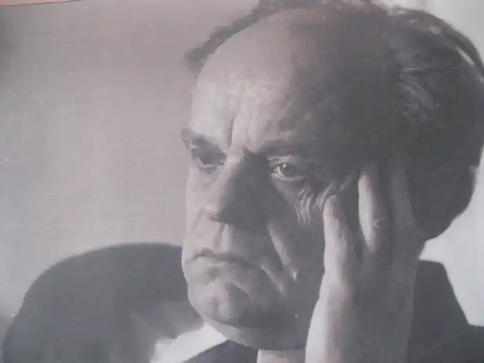
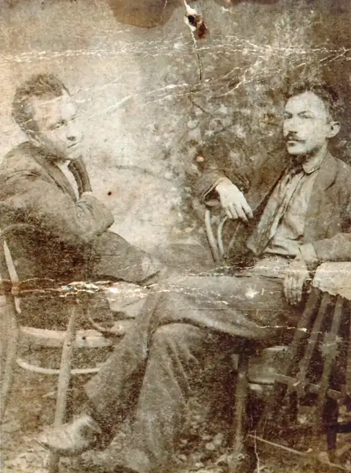
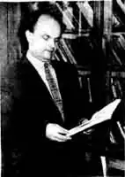
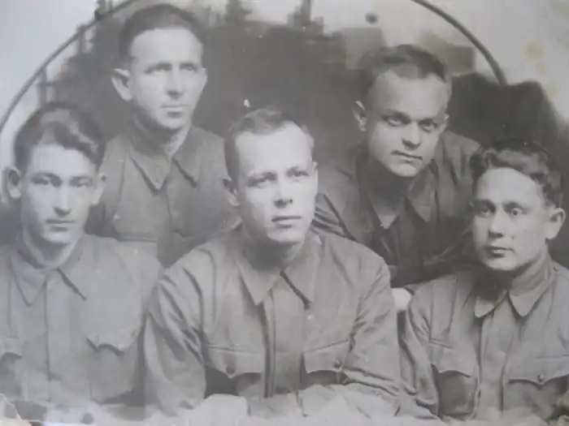
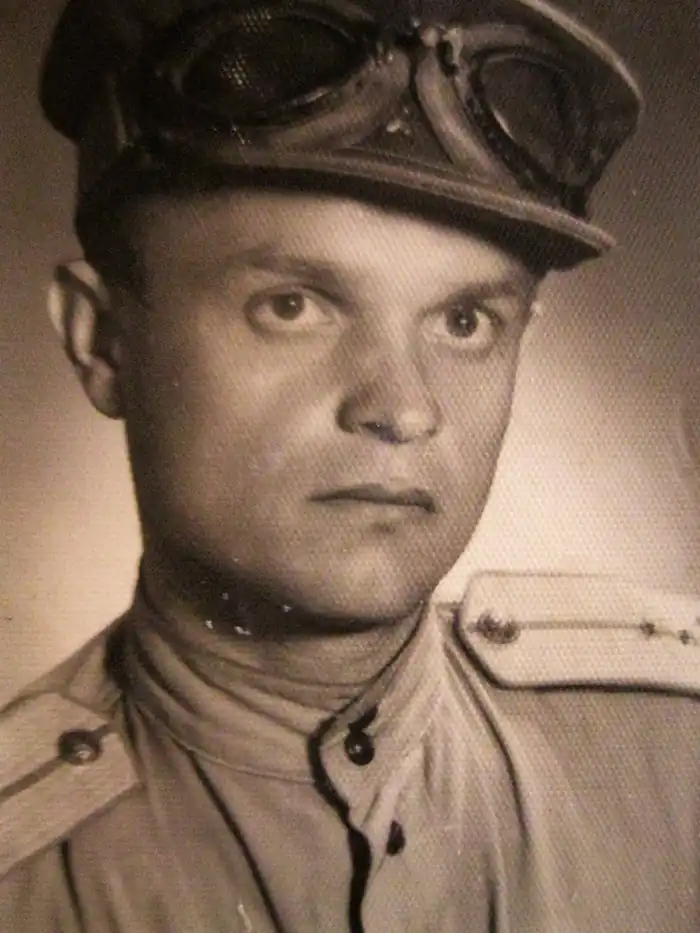
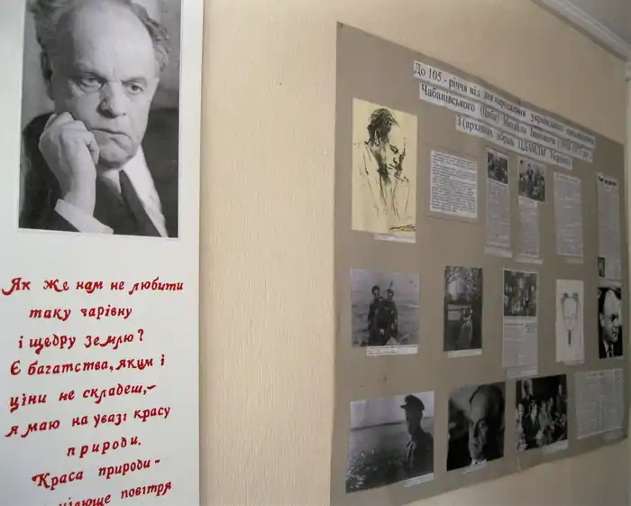
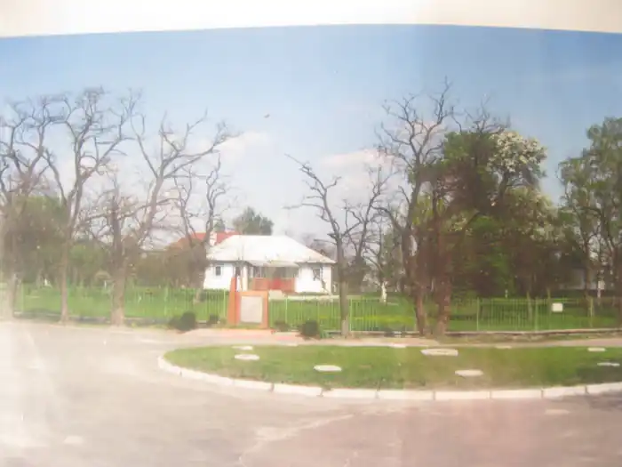
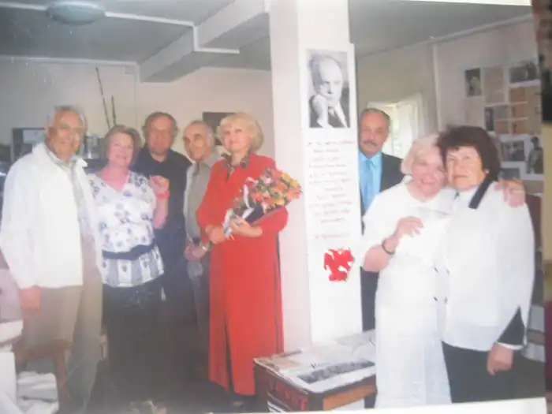
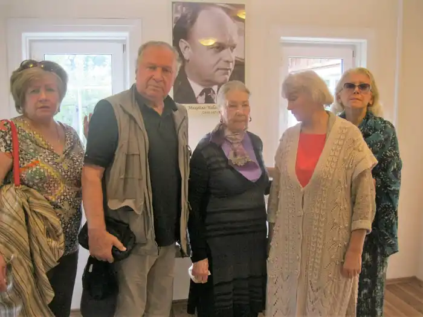
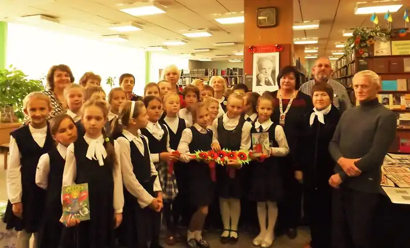
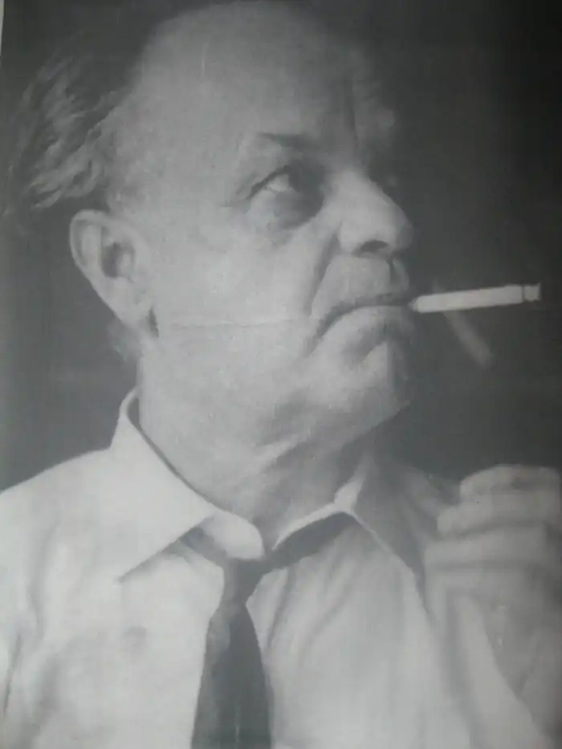
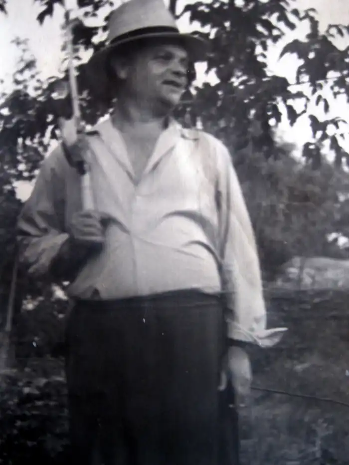
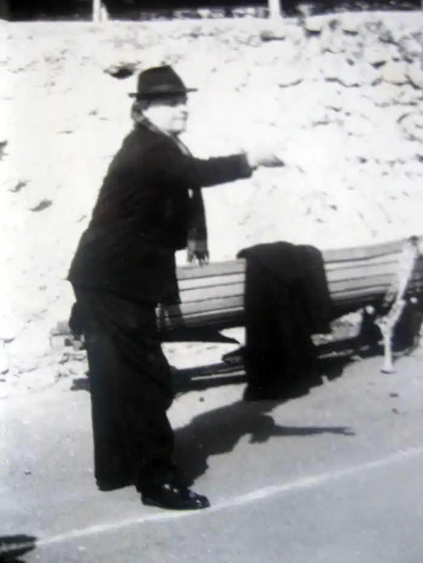
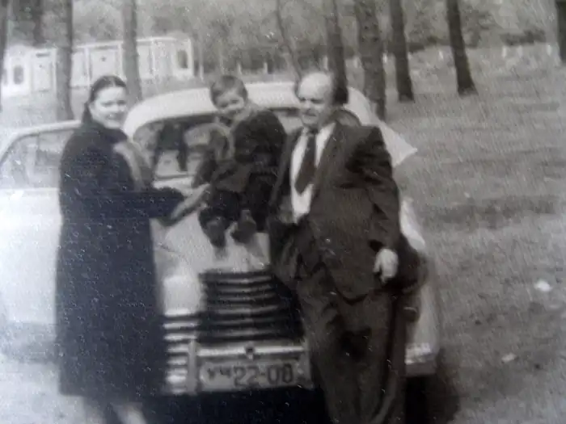
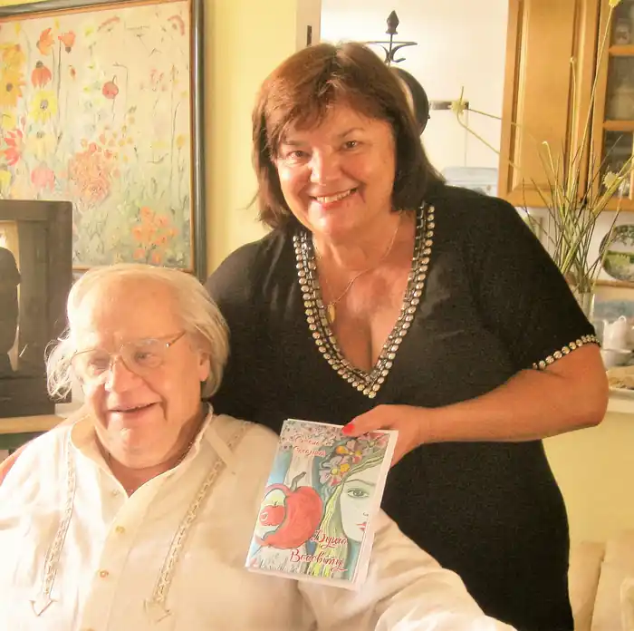
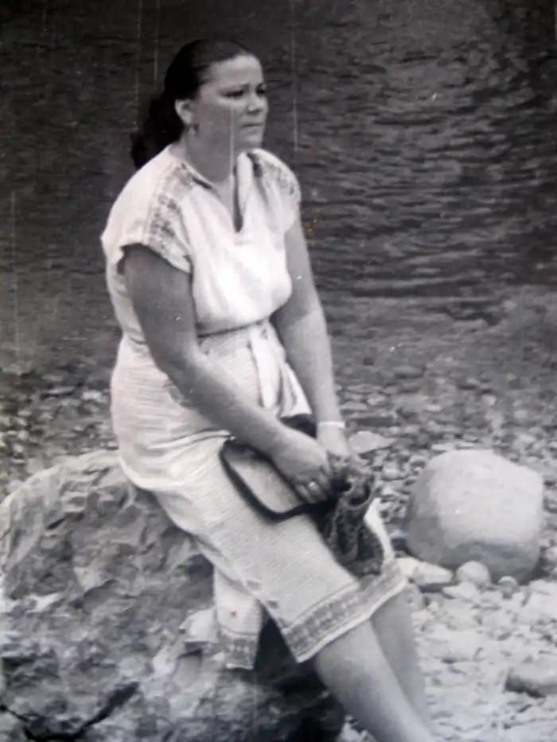
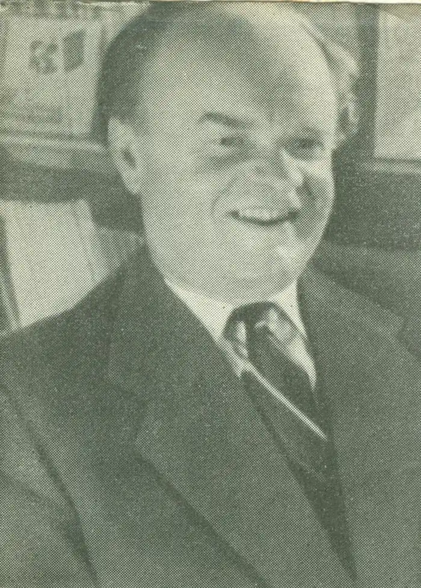
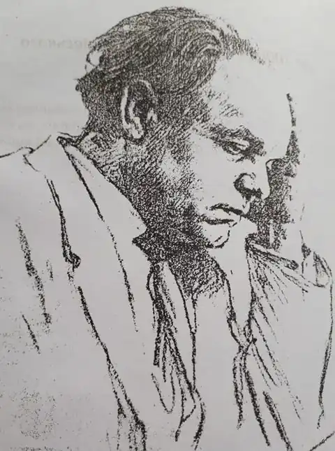
Миха́йло Іва́нович Чабані́вський (справжнє прізвище Циба)
(*5 (18) вересня 1910, село Лигівка, Костянтиноградського повіту Полтавської губернії, тепер Сахновщинського району Харківської області)—†4 квітня 1973, помер в будинку творчості в Ялті, похований на Байковому кладовищі, Київ)— український письменник і журналіст.
Дитинство Михайло Циба народився в мальовничому куточку України – степовому селі Лигівка, яке було засноване в1864, як власницький хутір, центр Нижньоорельської волості Зміївського повіту. Згодом, тема рідного села, оточуючої природи, постане в творчості письменника Михайла Чабанівського, як головна. Ось як сам письменник пише про свої дитинство: Так в кожному творі письменника. Навіть його останній твір – "Деревій", теж містить тему рідного села, де відтворені автобіографічні події із життя головного героя Павла Скуби (читай Михайла Циби) та його сім'ї…батька і матері…Роман "Деревій" досі не виданий, бо один поважний рецензент написав " Ніколи не буде надрукована "...Все ж в журналі "Вітчизна", вже після смерті М. І. Чабанівського, побачила світ частина роману "Деревій" — "Перша весна". Батько майбутнього письменника Іван Миколайович Циба ( 1878-1933) був сільським вчителем, активним, національно — свідомим українцем. Мати Марія Лентіївна Вовченко була господаркою, на її плечах лежало виховання трьох дітей: старшого Михайла, середнього Сашка та найменшої Галини. Вечорами вчитель Іван Циба писав вірші, які одного разу наважився показати поету, вчителю Віталію Самійленку, з яким познайомився в цьому селі. Вірші йому сподобалися, той запропонував видати книжку, але за власний кошт. У бідняка-вчителя не було грошей, але була — мрія! І.М. Циба вирішує продати корову, "а на той час корова фактично вартувала життя, бо була основою добробуту на селі" (*1 Циба О.М. Горе піїта. Літературне дослідження творчості Циби І.М.) . Дружина була не в захваті від цього, бо треба ж якось дітей годувати. Тим часом в 1911 році з’являється тонесенька, на 15 сторінок, збірочка поезій "Думки-лебедоньки" Івана Циби під редакцією В. Січовика (В. Самійленка). Вчитайтеся в ці рядки! Подумки чоловік сподівався продавати свою книжечку й хоч частково повернути собі гроші та дарма. Не так сталося, як гадалося! Згодом, книжка попала в реєстр заборонених видань, була вилучена з бібліотек, автор роздавлений лещатами тогочасної системи. У "Путівнику по фондах відділу рукописів" ( ІЛ, 1999 р) зазначено, що серед матеріалів редакції українського громадського і літературно-наукового журналу "Рідний край" (Ф.№ 43), зберігається лист з поезіями "Правдо! Правдо, зоре ясна…", "Правди первоцвіт" з написом: "Шановний редакторе! Якщо гідне до друку, то прошу надрукуйте. Лигівка. Ів. Циба". Автографу цьому вже 115 років! На сторінках журналу "Рідний край" виступали ( під псевдонімами) кращі поетичні сили українського письменства, ще тоді переважно молодь: Олена Пчілка, Леся Українка, Павло Тичина, Микола Вороний, Олекса Слісаренко, Віталій Самійленко, О. Коваленко, Христина Алчевська, Дмитро Яворницький, О. Олесь інші. В одному з номерів є оголошення ("РК", 08.05. 1911 р.) про вихід збірки "Думки-лебедоньки" Івана Циби, де зазначено місце видання: Лозова, Типографія Певзнера і Арлинського. В довідниках така типографія не позначена, але відомо, що 1930-их рр. — Михайло Наумович Певзнер був редактором районної "Комінтерн", згодом "Колос". Орендне підприємство "Друкарня" й зараз належить до пам’ятків Великописарівського району, Сумської області. Ось як згадує ті часи Іван Васильович Шинкаренко, близький родич М. І. Чабанівського, який розповів про свою маму: "Килина Миколаївна (в дівоцтві Циба) родом із сусіднього села Лигівка. Її племінник – видатний письменник Михайло Іванович Чабанівський (Циба). Брат Килини Миколаївни – Іван Миколайович Циба був учителем в Лигівці, а при радянській владі – "зам. міністра", інспектором народної освіти Харківської губернії. Як почалася сталінщина, голодомор, люди пішли з торбами по білому світу. Циба Іван Миколайович пішов проти Сталіна. Його засудили…розстріляли, як ворога народу. Михайла Івановича ніде не хотіли друкувати, як чули прізвище "Циба". Тому і взяв собі псевдонім. На війні доказав свою благонадійність, хоча мусів друкувати "в стіл"". До того ж, ще в зовсім юному віці, в житті М.І. Чабанівського сталася сімейна драма: батько покинув їх родину і оженився другий раз. Родина опинилась в бідності. Малому Михайлові довелося наймитувати за кусень хліба та жбан сметани, щоб хоч якось допомогти матері прогодувати малечу. Всі роки свого життя письменник ніс в серці любов і повагу до матері, до трудівниці, звертався з вдячністю до її світлої пам’яті. А батько лишався для Михайла нерозгаданою таємницею. Був мовчазний, похмурий і ніби чужий...Та його батько не забув свого батьківського боргу. Він приїхав до Марії — покликав до себе двох синів, наказав їм швиденько лаштуватися в дорогу, бо одвезе обох в науку аж до міста Павлограда. Мати дала синам по хлібині, сплакнула…Батько вдарив по худій хребтині найнятого ним коня, гарба заторохтіла по курній дорозі, яка вела у велике життя, у безвість, у невідомість… Освіта Маючи початкову(4 класи) освіту, два роки провчився в сільськогоспадарському технікумі в Павлограді. Закінчив педагогічне училище в Курській області. Вступив на заочне відділення історичного факультету Ленінградського університету, але не встиг закінчити, бо Друга світова війна перервала всі плани, перекрутила все життя. Кар’єра З 1930 працює у радянській пресі. В 1931 в журналі "Робселькор" надрукував перший вірш "Слово піаністові" (№ 37 від 1931 р.). У 1933 поему "Озівсталь" в газеті "Червоний боєць". Друга світова війна (1941 – 1945) На третій день війни, іде на фронт добровольцем, рядовим солдатом. Під час війни, секретар редакції "Красноармеец" 121 стрілецької дивізії, потім — начальник відділу інформації газети "Советский патриот" 37-ї армії, спеціальний кореспондент газети "Советский воин" 3-го Українського фронту, до 1949 року продовжив військову службу в Румунії та Болгарії. Брав участь у боях під Москвою, на Кавказі, під час форсування Дніпра й Дністра, а також на Балканах. Героїчні сторінки війни описав у збірках оповідань та повістей "Свіжа скиба" (1949), "Казковий край" , "Під зорями Балканськими" (1951), романах "Біля Дунаю" (1954-1955), "Балканська весна" (1960). Працював завідувачем відділу прози в журналі "Вітчизна". ТВОРЧІСТЬ : • збірка оповідань "Свіжа скиба" (1949). • збірка новел "Казковий край" (1951), • збірку "Під зорями балканськими" (1951), • збірка "Перші сходи" (1952), • збірка "Алмаз" (1953), • збірка "Срібні ключі" (1953), • роман "Біля дунаю" Книга перша. (Київ,1954) • роман "Біля Дунаю" Книга друга. (Київ,1955 • збірку "Степовий цвіт" (1956), • повість "Кам'яне небо" (1958), • повість "Стоїть явір над водою" "Замість передмови" М. Стельмах.(К.,1959), • роман "Балканська весна" (1960) • оповідання для дітей "Зелена чаша" (1960) • повість "Катюша" (1960) • роман "Тече вода в сине море" (1961) • книга нарисів "Садок вишневий коло хати" (1961)— присвячена питанням охорони природи. • "Шляхами великої долі" — дорожні нотатки (По шевченківських місцях) (1961) • повість "За півгодини до щастя". Передмова Ю.Збанацького "Людина прагне краси живої"(1963) • оповідання "Білий цвіт"(1963) • повість про Катерину Білокур "Таємниця рожевого потоку" (1964) • повість "Третій горизонт" (1965) • повість "Дорога додому" (1966), • В. Г. Безпалий "Гомін степів", роман. Літературна редакція М.Чабанівського (1967) • книгу нарисів "Оберігаймо рідну природу" (1968) • повісті та оповідання "Сліпа любов" (1968) • збірку "Лебедина сага" (1969) • повість "Журавлинка" (1972) • повість "Заповіт" (1972) • Кизя Р. Сидір Ковпак. Біографічна повість. Літературна редакція М. Чабанівського. (1973) • повість "Деревій" (1973) Остання книга письменника. Сценарії, заявки на кінофільми • На трубежі. Сценарій до художньодокументального фільму. Укркінохроніка,1959. • Золотий ріг. Сценарій до художньодокументального фільму. (Досі не здійснений) 24 стор. • "Стародавні мистецькі памятки України" — заявка на сценарій хронікально-документального фільму на три частини. Науковий консультант – Г. Логвин. • "В краю незайманої тиші". Дикторський текст до кінофільму. • "Світильник Прометея". Сценарій. Різне М.І. Чабанівський вів літературну студію (відділ прози) при видавництві "Молодь", а відомий український поет Дмитро Білоус вів відділення поезії, їх кімнати були поряд. Часто "поети" перебігали до відділення прози, бо Михайло Чабанівський розповідав дуже цікаві речі. Про це розповідав Борис Комар, письменник, лауреат премії ім. Лесі Українки. Всіляко допомагав підніматися молодим талантам, не тільки прозаїкам, а й поетам. Його вдячними учнями називають себе письменники — В.Шевчук, М.